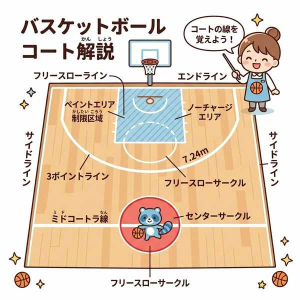
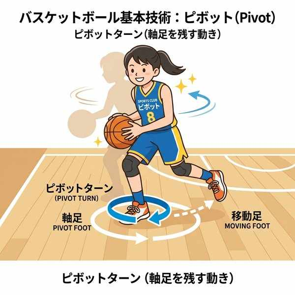

中学保健体育（体育実技）
単元13: バスケットボール
バスケットボールは、1チーム5人のプレイヤーが手を使ってボールをパスやドリブルで運び、相手ゴール（リング）に投げ入れて得点を競い合う、展開の非常にスピーディな球技です。ここでは、テスト頻出の得点システム、バイオレーション（ルール違反）、ファウル、そして時間に関する制限ルールを整理します。
1. コートサイズと得点システム

コートのライン（3ポイントエリア等）と得点
- コートの広さ：公式ルールでは、縦（サイドライン）が28m、横（エンドライン）が15mです。
- エンドライン：ゴールの下にある短い方の境界線。
- フリースローライン：ゴールの正面にある、フリースローを打つためのライン。
① 得点の種類
シュートを打った場所やプレイの状況によって、得点が変わります。
| シュートの状況 | 得点 | 定期テストのポイント |
|---|---|---|
| スリーポイントシュート | 3点 | スリーポイントラインの外側から放ったシュート。 |
| フリースロー | 1点 | 反則を受けた際などに与えられる、フリースローラインからのノーマークシュート。（1本につき1点） |
| 通常のシュート | 2点 | スリーポイントラインの内側から放った通常のシュート（レイアップシュートなど）。 |
※シュート動作（モーション）中にファウルを受け、そのシュートが決まった場合（バスケットカウント）、得点が認められた上で、さらに1本のフリースローが与えられます。
2. バスケットボールの基本技術と反則

軸足を固定して方向を変えるピボット動作
① 基本技術
- ドリブル：ボールを床に連続してバウンドさせながら移動する技術。
- ピボット（ピボットターン）：ボールを持った状態で、片方の足（軸足）を床に固定したまま、もう片方の足を動かして体の向きを変えること。
- ランニングシュート（レイアップシュート）：走り込みながらパスをもらい、ステップを踏んでゴールの近くでジャンプして放つシュート。
② 主な反則（バイオレーション・ファウル）
- トラベリング：ボールを持ったまま、ドリブルをつかずに3歩以上歩く反則。
- ダブルドリブル：一度ドリブルを終えて両手でボールを持った後、再びドリブルを始めてしまう反則。
- プッシング：手や体を使って、相手プレイヤーを不当に押してしまうファウル（プレイヤー同士の接触による反則）。
3. 時間に関する制限ルール（秒数ルール）
バスケットボールには、スピーディなゲーム展開を維持するための秒数制限が複数あります。テストの数値問題で非常によく出ます。
- 24秒ルール：攻撃チームは、ボールをコントロールし始めてから24秒以内にシュートを放ち、ボールをリングに当てなければならない。
- 3秒ルール：攻撃側の選手は、相手チームの制限区域（ゴール下のペイントエリア内）に、連続して3秒以上とどまってはいけない。
- 5秒ルール：スローインやフリースローを行う選手は、審判からボールを受け取ってから5秒以内にボールを手放さなければならない。
4. ディフェンス戦術
- マンツーマンディフェンス：ディフェンス側の一人一人が、あらかじめ決められた特定の相手（マークマン）を1対1で守る、最も基本的なディフェンス方法。
🔥 定期テスト対策・暗記のコツ
① バイオレーション（反則）の歩数と回数
「ドリブルなしで3歩以上歩く ➔ トラベリング」、「一度終えたドリブルを再開する ➔ ダブルドリブル」。この2つの違いと名称は実技・筆記ともに必須です。
② 「秒数ルール」の暗記
「シュートまでの制限 ➔ 24秒」、「ゴール下（ペイントエリア）の滞在制限 ➔ 3秒」、「スローイン・フリースローの投球制限 ➔ 5秒」。3, 5, 24の数字をしっかりと整理して覚えてください。
③ ピボットの「軸足」
ピボットターンを行うとき、床から離してはいけない足を「軸足（ピボットフット）」と呼びます。軸足が動いてしまうとトラベリングの反則になるため、ルール問題で狙われやすい箇所です。